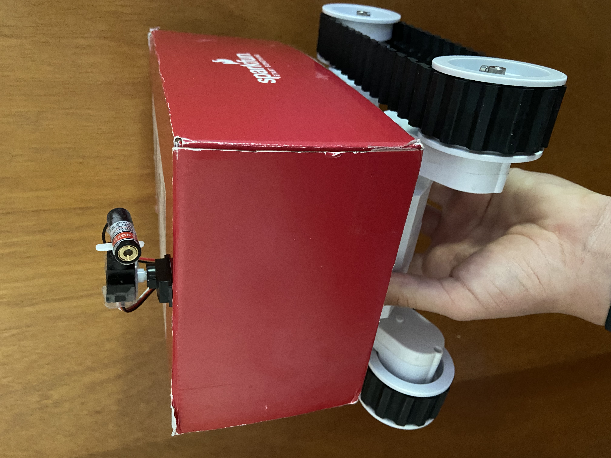

Teleoperated Rover + Laser Turret

Project Overview
This is my first major project, a tank-drive rover is a teleoperated platform outfitted with a two-servo laser turret. This was meant to be fun, and a good way to allow my family and my dog to interact with my new interest. The turret provides pan + tilt aiming using two hobby servos; aiming commands are sent remotely over XBee radios from a ground station (Arduino Mega + touchscreen shield). A later prototype replaced the handheld controller with a wearable setup (see below) that streams accelerometer orientation to the rover for intuitive motion-based control.
The system served as an R&D platform for remote actuation, human-in-the-loop control experiments, and rapid prototyping of integrated telemetry and servo control. It was intentionally simple and robust to prototypes new user interfaces (touchscreen, accelerometer glove) and to validate XBee comms for low-latency control.
Design & Implementation
Laser Turret (Pan / Tilt)
The turret uses two micro/mini servos in series: one for pan (rotation) mounted to the turret base and a second for tilt (elevation) attached to the laser mount.
Chassis & Mobility
The rover utilizes tank-driven treads for improved traction on all terrain. Drive control uses dual-motor H-bridge drivers commanded by a SparkFun Redboard (an Arduino Uno Variant)
Control & Communications
Primary control mode:
- Touchscreen UI — Ground station runs a simple menu on a touchscreen shield connected to an Arduino Mega. Rover control commands are encoded and sent over XBee serial link.
- HandXbee (accelerometer glove) — Later prototype streams IMU orientation from a wearable module over XBee; the rover was gesture controlled.
Electronics
- Rover: SparkFun Redboard, dual H-bridge motor driver shield, two hobby servos for turret, laser module, XBee radio module, 12V battery pack.
- Ground station: Arduino Mega + touchscreen UI + XBee radio (serial comm), later accelerometer + XBee for hand control.
Media — Photos & Videos
This project was made for my family and my dog. Please see below for a showcase of the handXbee and a demonstration of the rover.
Demo Video — Rover & Laser Turret
Demo Video — HandXbee (accelerometer) Control
Files & Downloads
Outcome
The rover provided a flexible testbed for remote control experiments and human(and canine)-interface evaluation. The touchscreen-based ground station was intuitive for operators, while the handXbee accelerometer control provided an engaging alternative input method, demonstrating the feasibility of motion-based robot control over low-latency XBee links.
This is one of my favorite projects because it was not just for the sake of studying, it was able to interact with my family and dog. My dog went nuts barking at the bot and chasing the pointer - I started to consider engineering as my future path around this time.